Spark SQL 作为 Spark 四大核心组件，用于处理结构化数据，在Spark 中使用 SQL 可以像之前使用 SQL 语句分析关系型数据库表一样方便地在 Spark 对海量数据进行快速分析，从而只需要关注数据分析的逻辑而不需要担心底层的分布式存储、计算、通信等细节，大大提高了开发效率。
Spark SQL 作为 Spark 四大核心组件，用于处理结构化数据，在Spark 中使用 SQL 可以像之前使用 SQL 语句分析关系型数据库表一样方便地在 Spark 对海量数据进行快速分析，从而只需要关注数据分析的逻辑而不需要担心底层的分布式存储、计算、通信等细节，大大提高了开发效率。
Hadoop 2.7分布式集群环境
Spark 2
CentOS 7
SparkSQL Shell
账号：student
密码：stu123
在/tmp/目录下创建 Subject.json 文件保存本次实验数据。进入/tmp目录：
cd /tmp通过指令修改Subject.json文件：
xxxxxxxxxx vi Subject.json按i键进入编辑模式，添加实验数据，具体的内容如下：
xxxxxxxxxx {"class":"java","type":"base","hour":20} {"class":"mysql","type":"base","hour":30} {"class":"python","type":"base","hour":25} {"class":"datawhare","type":"base","hour":20} {"class":"hadoop","type":"training","hour":68} {"class":"hive","type":"training","hour":38} {"class":"hbase","type":"training","hour":15} {"class":"spark","type":"training","hour":60}文件编辑完成后，按ECS键进入末行模式，在末行模式输入:wq保持文件。
其中每个数据项的含义为：
class：所学习的课程名称；
type：所学习课程类型，包括基础课程（base），实训课程（training）；
hour：所学课程需要的学时。
启动Spark指令如下：
xxxxxxxxxx cd /home/spark-2.4.0-bin-2.6.0-cdh5.7.0 bin/spark-shellSpark SQL的对象有两种 SparkSession 是 Spark 2.0 引入的新对象；在早期的Spark版本中SparkContext是Spark的主要API操作对象。SparkSession内部封装了SparkContext，所以实际上计算仍然是由SparkContext来完成。
首先在Linux中执行以下命令“spark-shell”进入Spark命令行，在spark-shell中输入代码创建SparkSession用于后续操作，具体代码如下：
xxxxxxxxxx import org.apache.spark.sql.SparkSession val spark = SparkSession.builder().appName("Spark SQL App").getOrCreate() // 引入包便于把 RDD 隐式转换为 DataFrame import spark.implicits._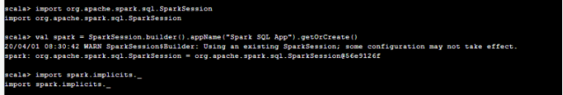
Spark DataFrame是RDD的派生类，主要作用是将RDD转换成带有Schema的数据格式，以便与于使用SQL进行数据操作。DataFrame并不是Spark SQL提出来的，在早期的R、Pandas语言就已经存在了。
DataSet：A DataSet is a distributed collection of data。(分布式的数据集)
DataFrame：A DataFrame is a DataSet organized into named columns。（带有列名称的DataSet）
根据上一步创建的SparkSession对象提供的API，可以从现有的RDD或者其他外部数据源创建DataFrame对象；在这里通过读取之前准备的JSON文件来创建一个DataFrame对象，具体指令如下：
xxxxxxxxxx //读取外部数据源创建 DataFrame 对象 val df = spark.read.json("/tmp/Subject.json")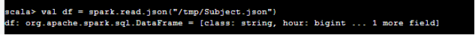
上面学习了SparkSession和DataFrame对象，下面依次来学习使用DataFrame的常用操作来学习它们。
打印信息
show()函数以表的方式打印读取的JSON文件，describe()函数打印指定字段统计信息。
打印信息的具体指令如下：
xxxxxxxxxx df.show() //其中，Count:记录条数，Mean:平均值，Stddev:样本标准差，Min:最小值，Max:最大值 df.describe("hour").show()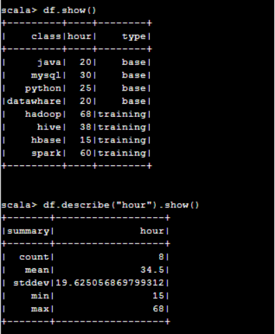
collect()函数获取所有数据到数组，collectAsList()函数获取所有数据到List。
具体指令如下：
xxxxxxxxxx df.collect() df.collectAsList()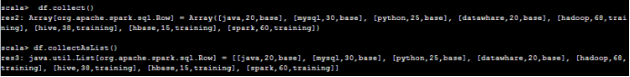
从 DataFrame 中获取数据还有：
first():获取第一行记录；
head(n)：获取前n行记录；
take(n):获取前n行数据；
takeAsList(n):获取前n行数据，并以List的形式展示。
如果想查看查看当前DataFrame的Schema（列名）信息使用printSchema()，具体指令如下：
xxxxxxxxxx df.printSchema()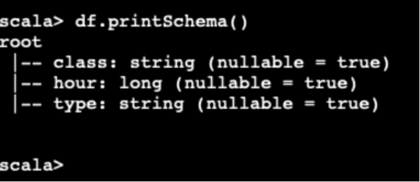
where 操作
过滤课程类型为实训（training）或者学时超过20的所有课程，具体操作如下：
xxxxxxxxxx df.where("type = 'training' or hour > 20").show()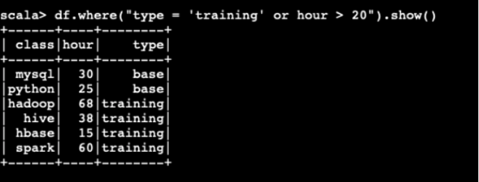
select 操作
查看课程名称和课程类型，具体指令如下：
xxxxxxxxxxdf.select("class","type").show()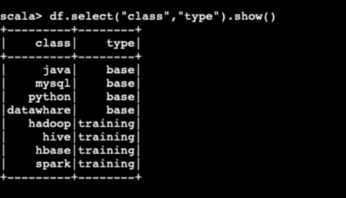
filter 操作
查看所有实训课程的课程名称和类型，具体指令如下：
xxxxxxxxxx df.filter(df("type").equalTo("training")).select("class", "type").show()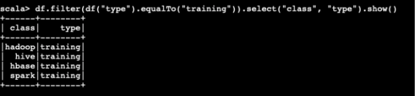
limit 操作
限制 DataFrame 的显示条数，这里限制显示df中的5条数据，具体指令如下：
xxxxxxxxxx df.limit(5).show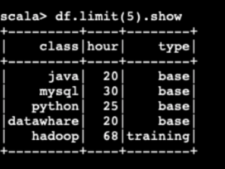
排序操作
在 DataFrame 中orderBy()和sort()都是按照指定字段进行排序，这里和数据相同desc表示降序，asc 表示升序（默认）。这里按照课时的降序进行展示，具体指令如下：
xxxxxxxxxx df.orderBy(df("hour").desc).show()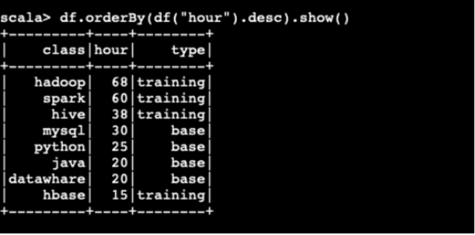
聚合操作操作
在 DataFrame 中支持了数据库中的大部分聚合操作，这里演示按照课程类型统计数据亮的操作，具体指令如下：
xxxxxxxxxx df.groupBy("type").count().show()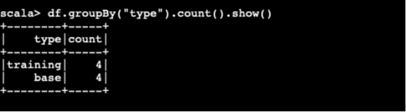
通过以上的基础操作，可以大致的了解了Spark DataFrame的基本操作，接下来演示使用SQL语句的方式进行直接查询。使用SQL查询更接近与在数据库中的操作方式，也是的开发效率更高效，在SparkSession 中同样提供了SparkSession.sql()方法来执行SQL语句，接下来来看一下怎样在DataFrame中执行SQL语句。
临时表
首先在DataFrame中执行SQL语句，需要将DataFrame注册为临时表（Table），具体指令如下：
xxxxxxxxxx df.createOrReplaceTempView("subject") //查询学时长度在20与40之间的课程名称 val sqlDF = spark.sql("SELECT class FROM subject WHERE hour >= 20 and hour <= 40") sqlDF.show()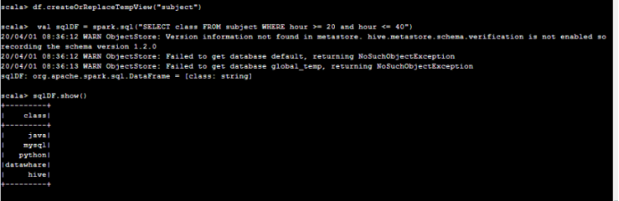
将 DataFrame 为 Parquet 格式的数据文件，具体指令如下：
xxxxxxxxxxdf.write.format("parquet").save("/tmp/Subject.parquet")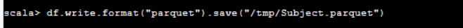
Parquet是一种基于列存储的数据格式，也是 Spark SQL 读取的默认文件格式。
全局临时表
如果在同一个应用跨不同SparkSession访问，可以将表注册成全局临时表，此表会一致存在，具体指令如下：
xxxxxxxxxx // 注册成为全局临时表 df.createGlobalTempView("GlobalSubject") // newSession()返回一个新的SparkSession对象，引用全局临时表需要 global_temp 标识 spark.newSession().sql("SELECT class,hour FROM global_temp.GlobalSubject WHERE hour >= 20 and hour <= 40").show()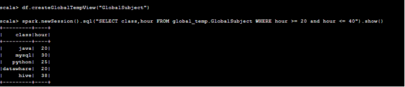
查看文件
使用命令退出Spark-shell，具体指令如下：
xxxxxxxxxx:quit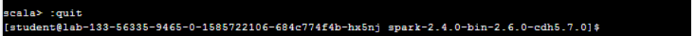
进入/tmp目录，具体指令如下：
xxxxxxxxxx cd /tmp使用ls指令可以看到该目录下有Subject.parquet文件，具体指令如下：
xxxxxxxxxx ls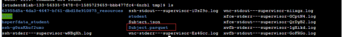
进入Subject.parquet目录，具体指令如下：
xxxxxxxxxxcd Subject.parquet使用ls指令可以看到该目录下的内容，具体指令如下：
xxxxxxxxxxls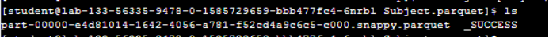
part-00000-e4d81014-1642-4056-a781-f52cd4a9c6c5-c000.snappy.parquet文件内容，具体指令如下：
xxxxxxxxxxcat part-00000-e4d81014-1642-4056-a781-f52cd4a9c6c5-c000.snappy.parquet
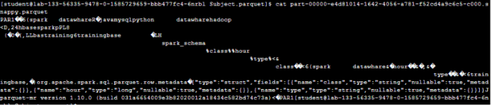